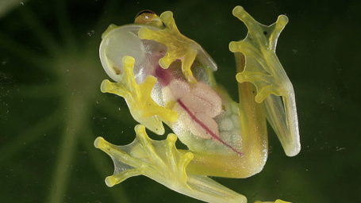

TLDR:
Nouns helped fund a groundbreaking discovery in the lush Andes of Western Ecuador, leading to the naming of a new glass frog species: Hyalinobatrachium nouns. The collaboration between Nouns, the Rainforest Trust, and Fundación Ecominga is another example of how digital innovation and conservation efforts can come together to make a real-world impact.
Details:
Hyalinobatrachium nouns was named in honor of Nouns DAO after funding the conservation project with 25 ETH in December 2021 via Nouns proposal 16. The naming, facilitated by a donation to the Rainforest Trust, marks the first instance of a DAO purchasing naming rights for a new species. The funds were used to support conservation efforts in the frog's native habitat, showcasing a novel approach to environmental preservation.
In 2021, an international team of biologists, including Juan M. Guayasamín and Becca Brunner, unveiled the discovery of Hyalinobatrachium nouns in the remote cloud forests of western Ecuador. This species, along with Hyalinobatrachium mashpi, was found in the Manduriacu Reserve and Los Cedros Reserve, regions known for their exceptional biodiversity but threatened by deforestation and mining activities.
The newly discovered species, Hyalinobatrachium nouns, is among over 100 known glass frog species worldwide. Its skin is translucent with a yellowish-green hue, making its internal organs, including its red heart, visible. This transparency provides a significant camouflage advantage, enhancing the species' chances of survival. Photographer Jaime Culebras captured stunning images that highlight the frog's distinctive appearance and its habitat.
The identification of Hyalinobatrachium nouns involved detailed bioacoustic analysis and DNA sequencing. Researchers faced challenges in recording the frog's calls due to its remote habitat, but DNA analysis revealed significant genetic differences from other similar species, highlighting the region's cryptic diversity.
Media Coverage:
Below is some of the media coverage, content and articles that mention the discovery:
- Yahoo News
- National Geographic
- Live Science
- Berkeley Rausser
- Rainforest Trust
- Wikipedia
- The Week
- Reptiles Magazine
- Sci.News: Breaking Science News
- Popular Science
- NCBI
- Amphibians of the World
- iNaturalist
- Ecominga Foundation
- AmphibiaWeb
- Nova Taxa
- Plazi
- Mining.com
- ResearchGate
- Mashpi Lodge
- PeerJ
- VC Research Berkeley
- Good News Network
- USFQ Research
Dates and Funding Details:
- December 2021: The project was funded 25 ETH via Nouns Proposal 16.
- 55% to Ecominga for operating and protecting the reserve.
- 5% to scientific publishing and discovery of new species.
- 40% to Rainforest Trust’s Climate Action Fund, which funds protection of rainforest to sequester carbon.
More on the team:
The discovery was made possible by the hard work and dedication of an international team of scientists, including Juan M. Guayasamín and Becca Brunner, Valencia-Aguilar, Franco-Mena, Ringler, Medina Armijos, Morochz, Bustamante, Maynard, and Culebras. Photographer Jaime Culebras is credited for the images.
Last Updated: August, 2024